눈의 안쪽 벽에는 빛을 받아들이는 신경조직인 망막이 자리합니다. 카메라에 비유하면 눈으로 들어온 영상이 맺히는 감광면에 해당합니다.
각막과 수정체를 통과한 빛이 안구 안의 투명한 공간을 지나 망막에 도달하면, 그 자극이 시각 정보로 바뀌어 뇌에 전달됩니다.
망막에는 여러 혈관이 분포합니다. 혈압과 혈당 같은 전신 상태가 혈관에 영향을 줄 수 있고, 나이가 들면서 생기는 변화도 망막 질환과 관련됩니다.
망막에 문제가 있어도 처음에는 시력 변화를 알아차리지 못할 수 있습니다. 중년 이후에는 증상과 위험 요인을 확인하고 정기 검사로 변화 여부를 살피는 것이 좋습니다.
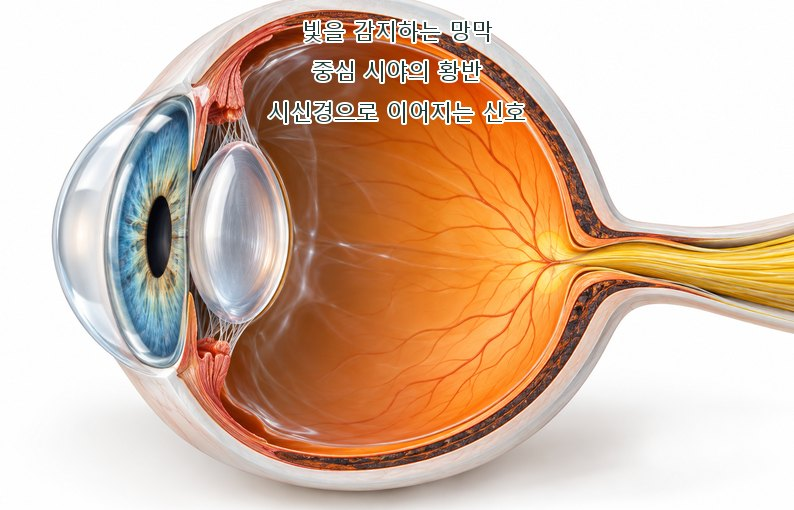
망막 가운데 있는 황반에는 빛을 감지하는 세포가 밀집해 있습니다. 글씨를 읽거나 얼굴의 세부를 구분하는 중심 시력에 중요한 부위입니다.
황반 조직에 나이와 관련된 손상이나 침착물 등의 변화가 생겨 중심부가 흐리거나 일그러져 보이는 질환을 황반변성이라고 합니다.
연령에 따른 변화가 관여하지만 모든 사람에게 나타나는 것은 아닙니다. 가족력과 흡연 등 개인별 위험 요인도 함께 살펴야 합니다.
황반의 기능이 떨어지면 세밀한 작업과 독서가 어려워지는 등 중심 시야를 쓰는 일상에 불편이 생길 수 있습니다.
망막 아래에 드루젠이라는 침착물이 관찰되거나 황반 조직이 얇아지는 변화가 나타납니다. 시각세포의 기능이 서서히 저하되는 과정에서 영양 공급과 주변 조직의 상태도 함께 평가합니다.
초기에는 뚜렷한 시력 저하를 느끼지 못할 수 있으며, 어두운 곳에서 세부를 구분하기가 전보다 어려워지기도 합니다.
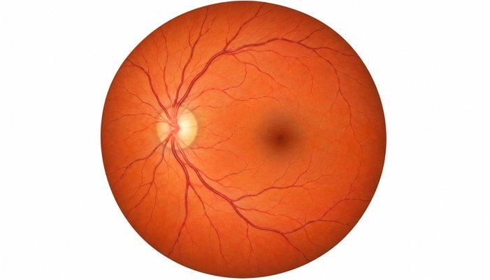
정상 망막
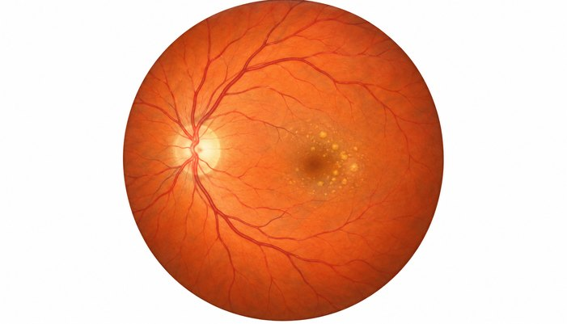
건성 황반변성
황반 주변에 비정상적인 새 혈관이 자라면서 액체가 새거나 출혈이 생길 수 있습니다. 이로 인해 망막 조직이 손상되고 중심 시력이 빠르게 떨어지는 문제가 나타납니다.
건성에 비해 시력 변화가 빠른 경우가 있어, 갑자기 가운데가 흐려지거나 선이 휘어 보이면 경과를 기다리지 않고 검사를 받아야 합니다.
정상 망막
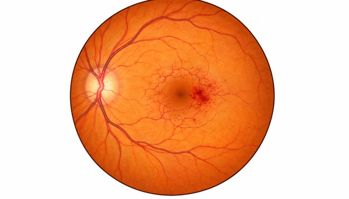
습성 황반변성
암슬러 격자는 가운데 점과 주변 직선을 보면서 중심 시야의 변화를 확인하는 자가 점검 도구입니다. 집에서도 사용할 수 있으나 안과 검사를 대신하지는 않습니다.
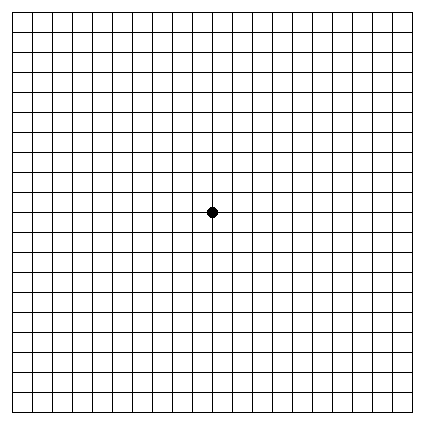
-
01
평소 책을 보는 조명과 시력 교정 상태에서 격자를 준비합니다.
-
02
격자에서 약 30cm 떨어져 한쪽 눈을 가리고, 다른 눈으로 중앙의 점을 바라봅니다.
-
03
가운데 점을 계속 보면서 주변 선이 굽거나 끊어지고, 일부가 가려져 보이는 곳이 있는지 확인합니다.
-
04
가렸던 눈과 보는 눈을 바꾸어 같은 방법으로 비교합니다.
중앙 점이 흐리거나 격자의 선이 휘고 끊어져 보인다면
변화가 생긴 눈의 상태를 안과에서 확인해 주세요.망막의 혈관에 생기는 문제에는 동맥과 정맥의 폐쇄, 눈에 공급되는 혈류의 부족, 고혈압과 관련한 변화 등 여러 유형이 있습니다.
혈관이 막혀 혈액이 충분히 공급되거나 빠져나가지 못하면 망막에 손상과 부종, 출혈 등이 생길 수 있습니다. 폐쇄된 혈관의 종류와 위치에 따라 증상과 치료가 달라집니다.
정맥이 막힌 뒤에는 망막의 변화뿐 아니라 유리체 출혈이나 이차성 녹내장 같은 문제가 생기는지도 살펴야 하므로 조기 진단이 필요합니다.
진단을 받은 후에도 일정한 간격으로 검사를 받아 황반 부종과 다른 합병증의 발생 여부를 추적합니다.
한 가지 원인만으로 설명하기는 어렵지만 녹내장, 고혈압과 당뇨, 이상지질혈증, 심장질환 등이 함께 있는지 확인합니다. 고령에서는 관련 위험이 더 높아질 수 있습니다.
망막의 변화가 생겨도 눈이 아프지 않을 수 있습니다. 통증 없이 시력만 떨어진 경우에도 혈관 상태를 확인해야 합니다.
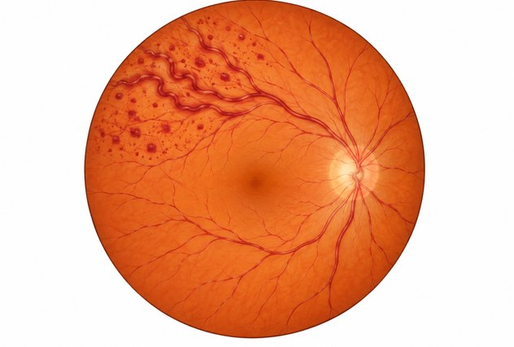
- 스테로이드 주사 검토
- 레이저 치료
- 안구 내 주사치료
- 필요한 경우 망막 광응고술 시행
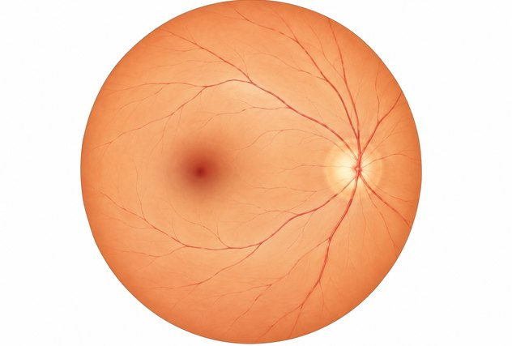
망막 동맥 폐쇄는 중년 이후에 주로 확인되며, 고혈압이나 당뇨, 비만과 심장질환처럼
혈관 상태와 혈액순환에 영향을 주는 질환이 있으면 관련 위험을 함께 평가합니다.
동맥 안에서 생기거나 다른 곳에서 이동해 온 혈전·색전이
자신보다 가느다란 망막 혈관의 통로에 걸리면 혈류를 막아
망막 조직으로 전달되는 산소가 갑자기 부족해질 수 있습니다.
눈이 아프지 않은 상태에서도 시야가 가려지거나 한쪽 눈이 갑자기 잘 보이지 않는 변화가 생길 수 있습니다.
심장이나 경동맥 등의 혈관 문제와 관련하여 발생하는 경우가 있으므로
급격한 시력 저하가 있으면 즉시 진료를 받고 전신 상태에 대한 협진도 진행해야 합니다.
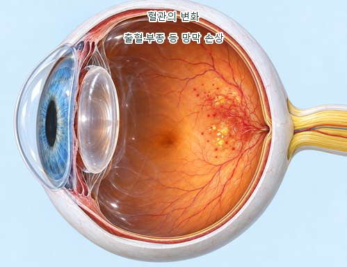
당뇨로 혈당이 높은 상태가 이어지면 망막의 미세혈관이 손상될 수 있습니다. 이로 인해 혈액순환이 나빠지고 출혈이나 부종 등이 생기는 눈의 합병증입니다.
초기에는 보이는 데 특별한 이상이 없다고 느끼는 경우가 있습니다.
질환이 진행하면 시야가 차츰 흐려지고 눈부심이 심해지기도 합니다. 눈 안에 출혈이 생겼을 때에는 떠다니는 점이나 실 같은 것이 갑자기 늘어날 수 있습니다.
뚜렷한 증상이 나타났을 때에는 망막 손상이 이미 진행된 경우가 있어, 치료를 받아도 이전의 시력으로 돌아오기 어려울 수 있습니다.
증상으로 알아차리기 전에 검사로 확인하고 혈당을 관리하는 과정이 필요합니다.
당뇨 진단을 받았다면 불편이 없더라도 안과 검진 계획을 정해 주세요. 보통 6개월에서 1년 사이의 간격을 참고하되 눈 상태에 따라 조정합니다.
혈당 등 전신 상태를 관리하고 정기적인 망막 검사를 이어가는 것이 눈의 합병증과 시력 손실을 줄이는 데 도움이 됩니다.
비정상적인 새 혈관이 생기기 전의 단계로, 망막 혈관의 작은 변화와 출혈 등을 관찰합니다. 이 시기에도 혈당과 혈압의 관리가 중요하며,
상태의 진행을 늦추기 위해 정기 검사로 변화를 비교합니다. 질환이 심해지면 시력이 차츰 떨어지는 경우가 있지만,
황반 부종이 동반될 때는 시력이 더 빠르게 저하될 수 있어 치료 시점을 놓치지 않도록 확인해야 합니다.
망막에 산소가 충분히 공급되지 않는 상태가 이어지면 비정상적인 새 혈관이 자랄 수 있습니다.
이 혈관은 약해서 쉽게 출혈하며, 유리체 출혈과 흉터 조직에 의한 견인 망막박리 등으로 이어져 시력을 크게 손상시킬 수 있습니다.
당뇨망막병증은 초기에 자각 증상이 없을 수 있습니다. 당뇨를 진단받은 뒤에는 눈에 불편이 있는지와 관계없이
의료진이 정한 간격에 맞춰 망막을 확인해야 합니다. 혈당을 관리하면서 안과 검진을 이어가면
합병증을 일찍 발견하고 필요한 치료를 시작하는 데 도움이 됩니다.
-
01
혈당과 혈압, 이상지질혈증과 신장 기능 등 전신 상태를 담당 의료진과 함께 확인하고 필요한 치료를 받습니다.
-
02
식사 시간을 규칙적으로 유지하고 본인에게 맞는 운동과 금연 등 생활 습관 관리를 이어갑니다.
-
03
당뇨가 있으면 안과 정기 검진을 일정에 포함하고, 보이는 정도가 갑자기 달라졌을 때는 예정일보다 먼저 진료받습니다.
밝은 하늘이나 흰 벽을 볼 때 작은 점, 실 또는 거미줄 같은 것이 떠다니는 것처럼 보일 수 있습니다. 시선을 옮기면 함께 따라 움직이는 느낌을 받기도 합니다.
눈 안의 유리체에 생긴 혼탁이나 변화가 망막에 그림자를 만들면서 나타나며, 노화뿐 아니라 다른 눈 질환과도 관련될 수 있습니다.
중년 이후 나이에 따른 유리체 변화로 흔히 생기지만, 근시가 심한 젊은 사람에게도 나타날 수 있습니다. 새로 생긴 변화라면 나이만으로 원인을 판단하지 않습니다.
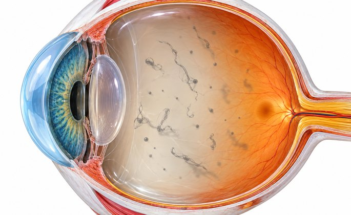
비문증
시야 안에서 점이나 실이 떠다니는 느낌
검사에서 다른 질환이 확인되지 않으면 경과를 살핍니다. 시간이 지나며 떠다니는 모양에 적응하여 덜 불편하게 느끼기도 합니다.
유리체의 출혈이나 망막열공, 망막박리 등의 변화가 비문증을 일으킬 수 있습니다. 시력을 위협하는 질환이 동반될 수 있으므로
갑자기 증상이 생기거나 늘면 빠르게 검사를 받아 원인을 찾고, 필요한 치료를 진행해야 합니다.
다른 질환이 없는 생리적 비문증은 보통 치료 없이 관찰합니다. 병적인 원인이 있으면 그 질환에 맞는 치료를 하여 추가적인 시력 손상을 줄여야 합니다.
원인 질환의 치료
약물 치료
레이저 치료
유리체 절제술
처음 검사에서 특별한 질환이 없더라도 망막 주변부의 모든 변화를 한 번에 확인하기 어려운 경우가 있습니다.
당시에는 작거나 드러나지 않았던 병변이 나중에 확인될 수 있으므로 검사 이후에도 증상을 관찰하고,
전과 다르게 보이는 부분이 생기면 다시 진료를 받아야 합니다.
-
01
떠다니는 점이나 실이 갑자기 많아짐
-
02
빛이 번쩍이는 광시증이 새로 생김
-
03
시야의 한 부분이 검은 커튼으로 덮인 것처럼 가려짐
“녹내장은 눈의 압력과 시신경 상태를
지속적으로 확인하고 관리하는 질환입니다.
혈압이 높은 상태가 다른 장기에 부담을 줄 수 있는 것처럼, 눈 안의 압력이 높아지면 시신경에 손상이 생길 위험이 있습니다.
시신경에 변화가 누적되면 주변 시야가 줄어들 수 있으며, 정상 범위의 안압에서도 손상이 발생하는 경우가 있습니다.
진단을 받은 뒤에는 안압을 낮추는 치료와 정기 검사를 통해 현재 시야를 오래 유지하고 추가적인 손상을 늦추는 것을 목표로 합니다.
눈 안을 순환하며 영양을 공급하는 방수가 원활하게 빠져나가지 못하거나
방수의 생성과 배출 사이에 균형이 맞지 않으면 안압이 높아질 수 있습니다. 녹내장은 이러한 압력과 여러 위험 요인으로 시신경이 손상되는 질환군입니다.
안압이 높아지면 눈의 조직이 압력의 영향을 받으며, 그 압력을 견디는 정도는 눈마다 다릅니다.
시신경 손상이 진행하면 시야가 서서히 좁아지기도 합니다. 초기에는 변화를 못 느낄 수 있지만, 적절히 치료하지 않으면 심한 시력 손실로 이어질 수 있습니다.
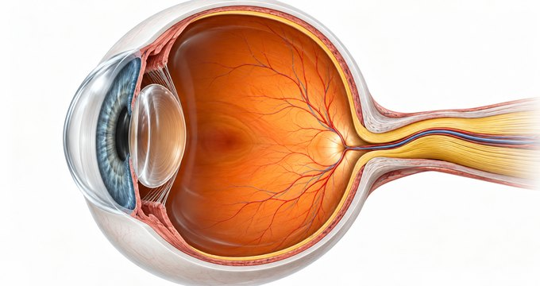
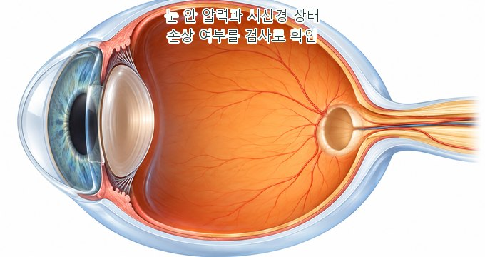
높은 안압은 시신경 손상의 중요한 위험 요인입니다. 압력이 시신경에 직접 부담을 주는 과정과
시신경으로 공급되는 혈류의 변화 등이 손상에 관여하는 것으로 설명됩니다.
모든 녹내장을 하나의 원인으로 설명할 수는 없으며, 발생과 진행에 영향을 주는 요인에 대한 연구가 계속되고 있습니다.
가족력과 높은 안압 외에도 고도근시, 당뇨나 고혈압 등 전신 상태를 문진에서 확인합니다. 이러한 정보는 검사 계획을 정하는 데 참고합니다.
당뇨 또는 고혈압이 있는 경우
심장·혈관 질환으로 치료받는 경우
고도근시가 있는 경우
가족 중 녹내장 환자가 있는 경우
안압이 높다는 설명을 들은 경우
중년 이후 눈의 정기 검진이 필요한 경우
눈에 심한 외상을 입은 적이 있는 경우
포도막염이 반복되는 경우
아이가 눈물을 많이 흘리거나 눈부심을 심하게 호소하는 경우
아이가 안경을 써도 시력이 충분히 나오지 않는 경우
안압이 참고 범위 안에 있다고 해서 시신경 손상이 없는 것은 아닙니다. 시신경이 압력을 견디는 구조와 혈류 상태 등 여러 조건이 관여할 수 있어, 수치뿐 아니라 시신경 모양과 시야 검사 결과를 함께 보아야 합니다. 정상안압 녹내장은 아시아에서 비교적 흔하게 확인되는 유형입니다.
불편한 증상이 거의 없어 진단받기 전까지 질환을 모르고 지내는 경우가 있습니다. 잘 보인다는 이유만으로 검사 필요성을 판단하기 어렵습니다.
나이에 따른 변화가 늘어나는 중년 이후에는 가족력과 눈 상태를 고려하여 정기적인 안과 검진 간격을 상담해 주세요.
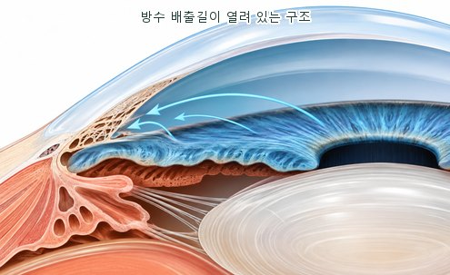
방수가 빠져나가는 각이 열려 있어도 배출 기능이 떨어져 시신경 손상이 천천히 진행될 수 있으며,
진행된 단계에 이르기까지 자각 증상이 뚜렷하지 않아 늦게 발견되는 경우가 있습니다.
초기에 확인하여 안압을 조절하는 치료를 시작하고 경과를 살피는 것이 중요하므로
위험 요인에 맞춘 안과 검진이 필요합니다.
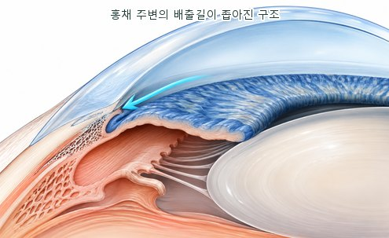
수정체와 전방의 구조가 관련될 수 있으며, 백내장이 함께 있는 경우에는 수정체 수술의 필요성과 시점을 검토하기도 합니다.
치료는 이미 손상된 시신경을 되돌리는 것보다 앞으로의 손상과 시야 감소를 늦추는 데 목적이 있습니다. 개인의 상태에 맞는 목표 안압을 정하고 유지하는 것이 중요합니다.
보통 안압을 낮추는 약물을 먼저 검토합니다. 점안약만으로 목표에 도달하지 못하거나 사용에 어려움이 있으면 레이저 또는 수술 등 다른 방법을 함께 고려합니다.
상태에 맞춰 먼저 검토하는 치료
점안약은 눈 안의 압력을 낮추는 데 사용하며, 약제의 종류에 따라 방수 생성과 배출 등에 작용합니다. 안압이 얼마나 변하는지와 부작용, 시야 손상의 진행을 확인하여 약을 조정합니다. 필요한 경우 먹는 약이나 레이저·수술을 병행하기도 합니다. 여러 점안약 중에서 개인에게 맞는 종류와 횟수를 정하므로 임의로 중단하지 않고 정해진 방법으로 사용해야 합니다.
점안약으로 조절이 충분하지 않거나 약을 사용하기 어려운 경우, 특정한 폐쇄각 상태 등에서 레이저를 검토할 수 있습니다. 시술 뒤 통증이나 이물감, 일시적인 안압 상승 등이 생길 수 있어 경과를 확인합니다. 압력이 목표 수준에 이르지 않으면 약물이나 수술 등 추가 치료가 필요할 수 있습니다.
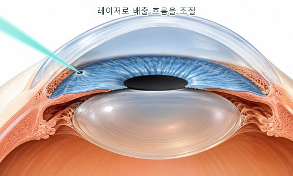
홍채 주변부에 레이저 적용
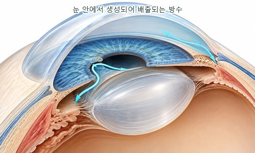
작은 통로를 통한 방수의 이동
이 치료는 홍채 주변에 작은 구멍을 만들어 방수가 앞뒤 공간 사이를 이동할 수 있게 하여
특정한 폐쇄각 상태에서 막힌 흐름을 보완하는 방법입니다.
급성 폐쇄각 녹내장이 발생했거나, 눈의 구조를 확인했을 때 그 위험이 높다고 판단되는 경우에는
홍채절개술의 필요성을 검토하여 방수 흐름을 돕고 안압을 조절하는 계획을 세울 수 있습니다.